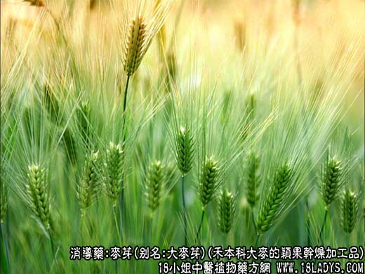
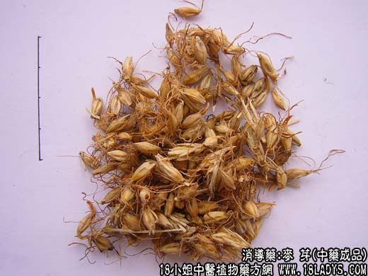
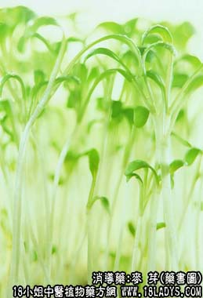

本品为常用中药。始载《名医别录》，列于糖项下。原名麦蘖。
别名：大麦芽。
来源：为禾本科一年生草本植物大麦（芒大麦）的颖果，经水湿生芽后的干燥加工品。栽培。
产地：全国各地均产。
性状鉴别：本品呈棱形，长8～12毫米，中部直径2.5～3.5毫米。表面有两片不易削落的稃壳，淡黄色，背面及两侧有脉5条，腹面有纵沟一条，基部有数条长1厘米左右的须根。稃内含种仁一粒。质坚，粉性。气无，味微甜。以色黄，粒大，有须根者为佳。
主要成分：含淀粉分解酶、乙种和丙种维生素等。
功效与作用：疏肝醒胃、消食除满、和中下气，其原理为：
1、健胃。用麦芽煎液胃内灌注的实验证明，麦芽对胃白酶分泌似有轻度促进作用，对增加胃酸（总酸和游离酸）的分泌亦似有轻度的作用。
2、退乳。临床观察，于产后回乳（如产妇无儿饮乳）或哺乳妇女在婴儿断乳时，因乳汁滞留，乳房胀痛，可用本品退乳，前人认为这与散血行气有关。
炮制：生用、炒用或炒焦。
效用：健脾胃，消食积。
临床应用：1、用于健胃，治一般消化不良，对米、面食积和果积（食水果过多而致的消化不良）有化积开胃的作用。可视作消化的滋养药，常配神曲、白术、陈皮，方如小儿伤食方。疾病过程中如有胃口不佳，消化力弱、舌苔厚腻，可在治疗方剂内酌加麦芽。
2、用于退乳，利用麦芽的温通作用，减轻乳母断乳后的乳汁滞流，从而消除胀痛，但此时麦芽用量宜大，用生麦芽120g，微火灼黄，水煎服，或用麦芽60g（炒研末），每服15g，温开水送下，效果较好。此外，服补药（如党参、黄芪等）而防其胀满时，可酌加麦芽助消化。
附：1、生麦芽醒胃作用较好，食欲不振者可用之，小孩尤为合适；炒麦芽性较温和，食物吸收不良，大便稀烂者用之较好，退乳也用炒麦芽；从对淀粉的消化力而论，生品大于炒焦（但微炒则影响不大）；2、前人有谓孕妇忌用麦芽，恐有碍胎，但实际上只要对症，孕妇也可用麦芽，但不宜长服，以免“削气”过甚。又炒麦芽服用过多时会影响乳汁分泌，哺乳妇宜慎用。
用量：本品用量宜稍大，量小无效，入煎剂一般每服12～30g（小儿酌减）。粉剂冲服每次6～15g，效果较好（对淀粉的消化力粉剂大于煎剂）。
处方举例：小儿伤食方：麦芽6g，谷芽6g，山楂4.5g，莱菔子3g，陈皮2.4g，连翘3g，神曲6g，白术3g，水煎服。
注：大麦有芒大麦、米大麦两种，米大麦无芒，形似小麦，但粒稍肥大。药用为芒大麦（糖麦）。另有少数地区以小麦的颖果发芽后作麦芽用。临床习惯认为生用能下乳，炒焦断乳。确否值得研究。